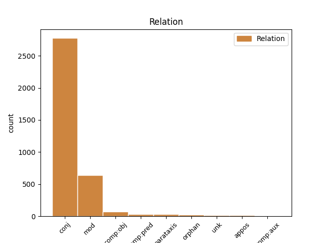
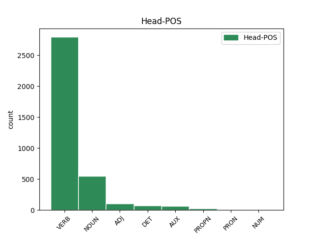
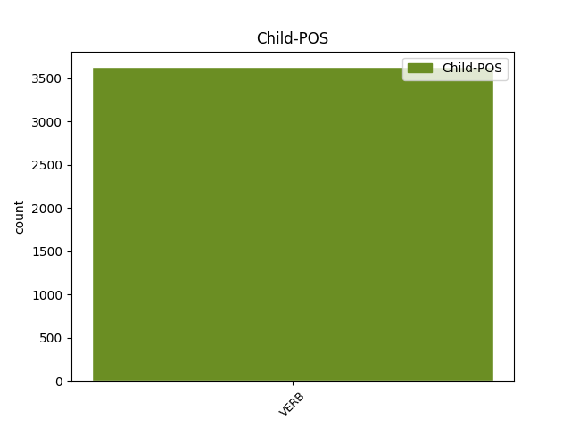

Distribution of features within this leaf



Agreement Rules sorted by frequency.
- When the dependent token is the conjunct(conj) of the head token, and the head token is VERB and the dependent token is VERB.
1 Když _ _ _ _ 0 _ _ _
2 oslava _ _ _ _ 0 _ _ _
3 skončila _ _ _ _ 0 _ _ _
4 a _ _ _ _ 0 _ _ _
5 s _ _ _ _ 0 _ _ _
6 nadcházejícím _ _ _ _ 0 _ _ _
7 víkendem _ _ _ _ 0 _ _ _
8 se _ _ _ _ 0 _ _ _
9 budova _ _ _ _ 0 _ _ _
10 vyprázdnila _ _ _ _ 0 _ _ _
11 , _ _ _ _ 0 _ _ _
12 vyndal vyndat VERB VpMS----R-AA--- Animacy=Anim|Gender=Masc|Number=Sing|Polarity=Pos|Tense=Past|VerbForm=Part|Voice=Act 0 _ _ _
13 otec _ _ _ _ 0 _ _ _
14 ze _ _ _ _ 0 _ _ _
15 svého _ _ _ _ 0 _ _ _
16 svazku _ _ _ _ 0 _ _ _
17 jeden _ _ _ _ 0 _ _ _
18 nenápadný _ _ _ _ 0 _ _ _
19 klíček _ _ _ _ 0 _ _ _
20 a _ _ _ _ 0 _ _ _
21 řekl říci VERB VpMS----R-AA--- Animacy=Anim|Gender=Masc|Number=Sing|Polarity=Pos|Tense=Past|VerbForm=Part|Voice=Act 12 conj _ SpaceAfter=No
22 : _ _ _ _ 0 _ _ _
1 Slyšel _ _ _ _ 0 _ _ _
2 jsem _ _ _ _ 0 _ _ _
3 tak _ _ _ _ 0 _ _ _
4 uvnitř _ _ _ _ 0 _ _ _
5 jeho _ _ _ _ 0 _ _ _
6 ženu žena NOUN NNFS4-----A---- Case=Acc|Gender=Fem|Number=Sing|Polarity=Pos 0 _ _ _
7 , _ _ _ _ 0 _ _ _
8 která _ _ _ _ 0 _ _ _
9 vevnitř _ _ _ _ 0 _ _ _
10 poklízela poklízet VERB VpFS----R-AA--- Gender=Fem|Number=Sing|Polarity=Pos|Tense=Past|VerbForm=Part|Voice=Act 6 mod _ SpaceAfter=No
11 , _ _ _ _ 0 _ _ _
12 jak _ _ _ _ 0 _ _ _
13 na _ _ _ _ 0 _ _ _
14 něj _ _ _ _ 0 _ _ _
15 zavolala _ _ _ _ 0 _ _ _
16 nějakou _ _ _ _ 0 _ _ _
17 částku _ _ _ _ 0 _ _ _
18 . _ _ _ _ 0 _ _ _
1 Potom _ _ _ _ 0 _ _ _
2 vyzkoušel _ _ _ _ 0 _ _ _
3 dlouhý _ _ _ _ 0 _ _ _
4 a _ _ _ _ 0 _ _ _
5 tenký _ _ _ _ 0 _ _ _
6 kříž _ _ _ _ 0 _ _ _
7 , _ _ _ _ 0 _ _ _
8 který _ _ _ _ 0 _ _ _
9 byl _ _ _ _ 0 _ _ _
10 sice _ _ _ _ 0 _ _ _
11 lehčí lehký ADJ AAIS1----2A---- Animacy=Inan|Case=Nom|Degree=Cmp|Gender=Masc|Number=Sing|Polarity=Pos 0 _ _ _
12 , _ _ _ _ 0 _ _ _
13 ale _ _ _ _ 0 _ _ _
14 všude _ _ _ _ 0 _ _ _
15 s _ _ _ _ 0 _ _ _
16 ním _ _ _ _ 0 _ _ _
17 neustále _ _ _ _ 0 _ _ _
18 narážel narážet VERB VpMS----R-AA--- Animacy=Anim|Gender=Masc|Number=Sing|Polarity=Pos|Tense=Past|VerbForm=Part|Voice=Act 11 conj _ SpaceAfter=No
19 , _ _ _ _ 0 _ _ _
20 takže _ _ _ _ 0 _ _ _
21 se _ _ _ _ 0 _ _ _
22 cítil _ _ _ _ 0 _ _ _
23 jako _ _ _ _ 0 _ _ _
24 ve _ _ _ _ 0 _ _ _
25 vězení _ _ _ _ 0 _ _ _
26 . _ _ _ _ 0 _ _ _
1 Protože _ _ _ _ 0 _ _ _
2 se _ _ _ _ 0 _ _ _
3 mu _ _ _ _ 0 _ _ _
4 nezamlouvalo _ _ _ _ 0 _ _ _
5 nic _ _ _ _ 0 _ _ _
6 z _ _ _ _ 0 _ _ _
7 toho ten DET PDNS2---------- Case=Gen|Gender=Neut|Number=Sing|PronType=Dem 0 _ _ _
8 , _ _ _ _ 0 _ _ _
9 co _ _ _ _ 0 _ _ _
10 se _ _ _ _ 0 _ _ _
11 nabízelo nabízet VERB VpNS----R-AA--- Gender=Neut|Number=Sing|Polarity=Pos|Tense=Past|VerbForm=Part|Voice=Act 7 mod _ _
12 na _ _ _ _ 0 _ _ _
13 první _ _ _ _ 0 _ _ _
14 pohled _ _ _ _ 0 _ _ _
15 , _ _ _ _ 0 _ _ _
16 začal _ _ _ _ 0 _ _ _
17 hledat _ _ _ _ 0 _ _ _
18 i _ _ _ _ 0 _ _ _
19 vzadu _ _ _ _ 0 _ _ _
20 . _ _ _ _ 0 _ _ _
1 Král _ _ _ _ 0 _ _ _
2 Šalamoun _ _ _ _ 0 _ _ _
3 vyprávěl vyprávět VERB VpMS----R-AA--- Animacy=Anim|Gender=Masc|Number=Sing|Polarity=Pos|Tense=Past|VerbForm=Part|Voice=Act 0 _ _ _
4 majiteli _ _ _ _ 0 _ _ _
5 , _ _ _ _ 0 _ _ _
6 co _ _ _ _ 0 _ _ _
7 mu _ _ _ _ 0 _ _ _
8 slavík _ _ _ _ 0 _ _ _
9 vyprávěl vyprávět VERB VpMS----R-AA--- Animacy=Anim|Gender=Masc|Number=Sing|Polarity=Pos|Tense=Past|VerbForm=Part|Voice=Act 3 comp:obj _ SpaceAfter=No
10 . _ _ _ _ 0 _ _ _
1 Býval bývat AUX VpMS----R-AA--- Animacy=Anim|Gender=Masc|Number=Sing|Polarity=Pos|Tense=Past|VerbForm=Part|Voice=Act 0 _ _ _
2 jsi _ _ _ _ 0 _ _ _
3 přece _ _ _ _ 0 _ _ _
4 dobrý _ _ _ _ 0 _ _ _
5 obchodník _ _ _ _ 0 _ _ _
6 , _ _ _ _ 0 _ _ _
7 " _ _ _ _ 0 _ _ _
8 pohoršovali pohoršovat VERB VpMP----R-AA--- Animacy=Anim|Gender=Masc|Number=Plur|Polarity=Pos|Tense=Past|VerbForm=Part|Voice=Act 1 conj _ _
9 se _ _ _ _ 0 _ _ _
10 ostatní _ _ _ _ 0 _ _ _
11 . _ _ _ _ 0 _ _ _
1 " _ _ _ _ 0 _ _ _
2 Mám _ _ _ _ 0 _ _ _
3 dvě _ _ _ _ 0 _ _ _
4 dcery _ _ _ _ 0 _ _ _
5 , _ _ _ _ 0 _ _ _
6 " _ _ _ _ 0 _ _ _
7 vysvětlovala vysvětlovat VERB VpFS----R-AA--- Gender=Fem|Number=Sing|Polarity=Pos|Tense=Past|VerbForm=Part|Voice=Act 0 _ _ _
8 vzlykajíc vzlykat VERB VeFS------A---- Aspect=Imp|Gender=Fem|Number=Sing|Polarity=Pos|Tense=Pres|VerbForm=Conv|Voice=Act 7 comp:pred _ SpaceAfter=No
9 . _ _ _ _ 0 _ _ _
1 " _ _ _ _ 0 _ _ _
2 No _ _ _ _ 0 _ _ _
3 , _ _ _ _ 0 _ _ _
4 jak _ _ _ _ 0 _ _ _
5 to _ _ _ _ 0 _ _ _
6 mám _ _ _ _ 0 _ _ _
7 říct _ _ _ _ 0 _ _ _
8 ? _ _ _ _ 0 _ _ _
9 " _ _ _ _ 0 _ _ _
10 zdráhal zdráhat VERB VpMS----R-AA--- Animacy=Anim|Gender=Masc|Number=Sing|Polarity=Pos|Tense=Past|VerbForm=Part|Voice=Act 0 _ _ _
11 se _ _ _ _ 0 _ _ _
12 viditelně _ _ _ _ 0 _ _ _
13 rozpačitý _ _ _ _ 0 _ _ _
14 komisař _ _ _ _ 0 _ _ _
15 , _ _ _ _ 0 _ _ _
16 ale _ _ _ _ 0 _ _ _
17 pak _ _ _ _ 0 _ _ _
18 jako _ _ _ _ 0 _ _ _
19 by _ _ _ _ 0 _ _ _
20 si _ _ _ _ 0 _ _ _
21 právě _ _ _ _ 0 _ _ _
22 uvědomil _ _ _ _ 0 _ _ _
23 směšnost _ _ _ _ 0 _ _ _
24 situace _ _ _ _ 0 _ _ _
25 , _ _ _ _ 0 _ _ _
26 řekl říci VERB VpMS----R-AA--- Animacy=Anim|Gender=Masc|Number=Sing|Polarity=Pos|Tense=Past|VerbForm=Part|Voice=Act 10 orphan _ SpaceAfter=No
27 : _ _ _ _ 0 _ _ _
1 A _ _ _ _ 0 _ _ _
2 vžil _ _ _ _ 0 _ _ _
3 se _ _ _ _ 0 _ _ _
4 do _ _ _ _ 0 _ _ _
5 svého _ _ _ _ 0 _ _ _
6 vyprávění _ _ _ _ 0 _ _ _
7 natolik _ _ _ _ 0 _ _ _
8 , _ _ _ _ 0 _ _ _
9 že _ _ _ _ 0 _ _ _
10 sám _ _ _ _ 0 _ _ _
11 začal _ _ _ _ 0 _ _ _
12 zvedat _ _ _ _ 0 _ _ _
13 ruce _ _ _ _ 0 _ _ _
14 a _ _ _ _ 0 _ _ _
15 nohy _ _ _ _ 0 _ _ _
16 , _ _ _ _ 0 _ _ _
17 poskakoval _ _ _ _ 0 _ _ _
18 a _ _ _ _ 0 _ _ _
19 tančil _ _ _ _ 0 _ _ _
20 po _ _ _ _ 0 _ _ _
21 pokoji _ _ _ _ 0 _ _ _
22 , _ _ _ _ 0 _ _ _
23 jakoby _ _ _ _ 0 _ _ _
24 byl být AUX VpMS----R-AA--- Animacy=Anim|Gender=Masc|Number=Sing|Polarity=Pos|Tense=Past|VerbForm=Part|Voice=Act 0 _ _ _
25 nikdy _ _ _ _ 0 _ _ _
26 revma _ _ _ _ 0 _ _ _
27 neměl mít VERB VpMS----R-NA--- Animacy=Anim|Gender=Masc|Number=Sing|Polarity=Neg|Tense=Past|VerbForm=Part|Voice=Act 24 comp:aux _ SpaceAfter=No
28 . _ _ _ _ 0 _ _ _
1 A _ _ _ _ 0 _ _ _
2 tak _ _ _ _ 0 _ _ _
3 se _ _ _ _ 0 _ _ _
4 mnoho _ _ _ _ 0 _ _ _
5 hostů _ _ _ _ 0 _ _ _
6 bavilo _ _ _ _ 0 _ _ _
7 tím _ _ _ _ 0 _ _ _
8 , _ _ _ _ 0 _ _ _
9 že _ _ _ _ 0 _ _ _
10 po _ _ _ _ 0 _ _ _
11 dobrém _ _ _ _ 0 _ _ _
12 jídle _ _ _ _ 0 _ _ _
13 zkoušeli _ _ _ _ 0 _ _ _
14 Mirca Mirco PROPN NNMS4-----A---- Animacy=Anim|Case=Acc|Gender=Masc|NameType=Giv|Number=Sing|Polarity=Pos 0 _ _ _
15 , _ _ _ _ 0 _ _ _
16 který _ _ _ _ 0 _ _ _
17 stále _ _ _ _ 0 _ _ _
18 posedával posedávat VERB VpMS----R-AA--- Animacy=Anim|Gender=Masc|Number=Sing|Polarity=Pos|Tense=Past|VerbForm=Part|Voice=Act 14 mod _ _
19 v _ _ _ _ 0 _ _ _
20 blízkosti _ _ _ _ 0 _ _ _
21 restaurace _ _ _ _ 0 _ _ _
22 . _ _ _ _ 0 _ _ _
1 Nešla jít VERB VpFS----R-NA--- Gender=Fem|Number=Sing|Polarity=Neg|Tense=Past|VerbForm=Part|Voice=Act 0 _ _ _
2 pěšky _ _ _ _ 0 _ _ _
3 ani _ _ _ _ 0 _ _ _
4 se _ _ _ _ 0 _ _ _
5 nevezla _ _ _ _ 0 _ _ _
6 , _ _ _ _ 0 _ _ _
7 seděla sedět VERB VpFS----R-AA--- Gender=Fem|Number=Sing|Polarity=Pos|Tense=Past|VerbForm=Part|Voice=Act 1 appos _ _
8 na _ _ _ _ 0 _ _ _
9 kozlovi _ _ _ _ 0 _ _ _
10 a _ _ _ _ 0 _ _ _
11 nohama _ _ _ _ 0 _ _ _
12 se _ _ _ _ 0 _ _ _
13 odrážela _ _ _ _ 0 _ _ _
14 od _ _ _ _ 0 _ _ _
15 země _ _ _ _ 0 _ _ _
16 . _ _ _ _ 0 _ _ _
1 Nikdo _ _ _ _ 0 _ _ _
2 netušil _ _ _ _ 0 _ _ _
3 , _ _ _ _ 0 _ _ _
4 kdo _ _ _ _ 0 _ _ _
5 první _ _ _ _ 0 _ _ _
6 vyslovil _ _ _ _ 0 _ _ _
7 to _ _ _ _ 0 _ _ _
8 ohavné _ _ _ _ 0 _ _ _
9 podezření _ _ _ _ 0 _ _ _
10 , _ _ _ _ 0 _ _ _
11 ale _ _ _ _ 0 _ _ _
12 šuškání _ _ _ _ 0 _ _ _
13 skrývané _ _ _ _ 0 _ _ _
14 do _ _ _ _ 0 _ _ _
15 dlaní _ _ _ _ 0 _ _ _
16 nebylo _ _ _ _ 0 _ _ _
17 možno _ _ _ _ 0 _ _ _
18 přeslechnout _ _ _ _ 0 _ _ _
19 a _ _ _ _ 0 _ _ _
20 významné _ _ _ _ 0 _ _ _
21 pohledy _ _ _ _ 0 _ _ _
22 ostatních _ _ _ _ 0 _ _ _
23 mnichů _ _ _ _ 0 _ _ _
24 , _ _ _ _ 0 _ _ _
25 kdykoli _ _ _ _ 0 _ _ _
26 Naitó _ _ _ _ 0 _ _ _
27 procházel procházet VERB VpMS----R-AA--- Animacy=Anim|Gender=Masc|Number=Sing|Polarity=Pos|Tense=Past|VerbForm=Part|Voice=Act 30 mod _ _
28 kolem _ _ _ _ 0 _ _ _
29 , _ _ _ _ 0 _ _ _
30 nešly jít VERB VpIP----R-NA--- Animacy=Inan|Gender=Masc|Number=Plur|Polarity=Neg|Tense=Past|VerbForm=Part|Voice=Act 0 _ _ _
31 přehlédnout _ _ _ _ 0 _ _ _
32 . _ _ _ _ 0 _ _ _
1 Otrok _ _ _ _ 0 _ _ _
2 tě _ _ _ _ 0 _ _ _
3 přece _ _ _ _ 0 _ _ _
4 zachránil zachránit VERB VpMS----R-AA--- Animacy=Anim|Gender=Masc|Number=Sing|Polarity=Pos|Tense=Past|VerbForm=Part|Voice=Act 0 _ _ _
5 a _ _ _ _ 0 _ _ _
6 poradil _ _ _ _ 0 _ _ _
7 si _ _ _ _ 0 _ _ _
8 se _ _ _ _ 0 _ _ _
9 čtyřiceti _ _ _ _ 0 _ _ _
10 muži _ _ _ _ 0 _ _ _
11 , _ _ _ _ 0 _ _ _
12 přesně _ _ _ _ 0 _ _ _
13 tak _ _ _ _ 0 _ _ _
14 , _ _ _ _ 0 _ _ _
15 jak _ _ _ _ 0 _ _ _
16 jsem _ _ _ _ 0 _ _ _
17 ti _ _ _ _ 0 _ _ _
18 říkal _ _ _ _ 0 _ _ _
19 ! _ _ _ _ 0 _ _ _
20 " _ _ _ _ 0 _ _ _
21 rozhorleně _ _ _ _ 0 _ _ _
22 se _ _ _ _ 0 _ _ _
23 bránil bránit VERB VpMS----R-AA--- Animacy=Anim|Gender=Masc|Number=Sing|Polarity=Pos|Tense=Past|VerbForm=Part|Voice=Act 4 unk _ _
24 obchodník _ _ _ _ 0 _ _ _
25 . _ _ _ _ 0 _ _ _
1 O _ _ _ _ 0 _ _ _
2 několik _ _ _ _ 0 _ _ _
3 let _ _ _ _ 0 _ _ _
4 později _ _ _ _ 0 _ _ _
5 - _ _ _ _ 0 _ _ _
6 starý _ _ _ _ 0 _ _ _
7 soused _ _ _ _ 0 _ _ _
8 byl být VERB VpMS----R-AA--- Animacy=Anim|Gender=Masc|Number=Sing|Polarity=Pos|Tense=Past|VerbForm=Part|Voice=Act 14 parataxis _ _
9 už _ _ _ _ 0 _ _ _
10 dlouho _ _ _ _ 0 _ _ _
11 po _ _ _ _ 0 _ _ _
12 smrti _ _ _ _ 0 _ _ _
13 - _ _ _ _ 0 _ _ _
14 vydal vydat VERB VpMS----R-AA--- Animacy=Anim|Gender=Masc|Number=Sing|Polarity=Pos|Tense=Past|VerbForm=Part|Voice=Act 0 _ _ _
15 se _ _ _ _ 0 _ _ _
16 i _ _ _ _ 0 _ _ _
17 onen _ _ _ _ 0 _ _ _
18 mladý _ _ _ _ 0 _ _ _
19 muž _ _ _ _ 0 _ _ _
20 hledat _ _ _ _ 0 _ _ _
21 pravdu _ _ _ _ 0 _ _ _
22 . _ _ _ _ 0 _ _ _
1 " _ _ _ _ 0 _ _ _
2 Proč _ _ _ _ 0 _ _ _
3 ji _ _ _ _ 0 _ _ _
4 hledáte _ _ _ _ 0 _ _ _
5 ? _ _ _ _ 0 _ _ _
6 " _ _ _ _ 0 _ _ _
7 ptal _ _ _ _ 0 _ _ _
8 se _ _ _ _ 0 _ _ _
9 mistr _ _ _ _ 0 _ _ _
10 , _ _ _ _ 0 _ _ _
11 neboť _ _ _ _ 0 _ _ _
12 to _ _ _ _ 0 _ _ _
13 byl _ _ _ _ 0 _ _ _
14 on on PRON PPMS1--3------- Animacy=Anim|Case=Nom|Gender=Masc|Number=Sing|Person=3|PronType=Prs 0 _ _ _
15 , _ _ _ _ 0 _ _ _
16 koho _ _ _ _ 0 _ _ _
17 oslovili oslovit VERB VpMP----R-AA--- Animacy=Anim|Gender=Masc|Number=Plur|Polarity=Pos|Tense=Past|VerbForm=Part|Voice=Act 14 mod _ _
18 během _ _ _ _ 0 _ _ _
19 odpočinku _ _ _ _ 0 _ _ _
20 . _ _ _ _ 0 _ _ _
1 Renáta Renáta PROPN NNFS1-----A---- Case=Nom|Gender=Fem|NameType=Giv|Number=Sing|Polarity=Pos 0 _ _ _
2 ještě _ _ _ _ 0 _ _ _
3 chvilku _ _ _ _ 0 _ _ _
4 klábosila _ _ _ _ 0 _ _ _
5 , _ _ _ _ 0 _ _ _
6 nevšímajíc všímat VERB VeFS------N---- Aspect=Imp|Gender=Fem|Number=Sing|Polarity=Neg|Tense=Pres|VerbForm=Conv|Voice=Act 1 comp:pred _ _
7 si _ _ _ _ 0 _ _ _
8 mojí _ _ _ _ 0 _ _ _
9 zamlklosti _ _ _ _ 0 _ _ _
10 , _ _ _ _ 0 _ _ _
11 až _ _ _ _ 0 _ _ _
12 konečně _ _ _ _ 0 _ _ _
13 odešla _ _ _ _ 0 _ _ _
14 . _ _ _ _ 0 _ _ _
1 A _ _ _ _ 0 _ _ _
2 proto _ _ _ _ 0 _ _ _
3 byl _ _ _ _ 0 _ _ _
4 jediný jediný ADJ AAMS1----1A---- Animacy=Anim|Case=Nom|Degree=Pos|Gender=Masc|Number=Sing|Polarity=Pos 0 _ _ _
5 v _ _ _ _ 0 _ _ _
6 rodině _ _ _ _ 0 _ _ _
7 , _ _ _ _ 0 _ _ _
8 kdo _ _ _ _ 0 _ _ _
9 si _ _ _ _ 0 _ _ _
10 všiml všimnout VERB VpMS----R-AA--1 Animacy=Anim|Gender=Masc|Number=Sing|Polarity=Pos|Tense=Past|VerbForm=Part|Voice=Act 4 mod _ SpaceAfter=No
11 , _ _ _ _ 0 _ _ _
12 že _ _ _ _ 0 _ _ _
13 se _ _ _ _ 0 _ _ _
14 dědeček _ _ _ _ 0 _ _ _
15 chvěje _ _ _ _ 0 _ _ _
16 zimou _ _ _ _ 0 _ _ _
17 . _ _ _ _ 0 _ _ _
1 Opíraje opírat VERB VeMS------A---- Animacy=Anim|Aspect=Imp|Gender=Masc|Number=Sing|Polarity=Pos|Tense=Pres|VerbForm=Conv|Voice=Act 14 comp:pred _ _
2 se _ _ _ _ 0 _ _ _
3 o _ _ _ _ 0 _ _ _
4 hůl _ _ _ _ 0 _ _ _
5 , _ _ _ _ 0 _ _ _
6 dobelhal _ _ _ _ 0 _ _ _
7 se _ _ _ _ 0 _ _ _
8 k _ _ _ _ 0 _ _ _
9 mistrovi _ _ _ _ 0 _ _ _
10 starý _ _ _ _ 0 _ _ _
11 , _ _ _ _ 0 _ _ _
12 skoro _ _ _ _ 0 _ _ _
13 slepý _ _ _ _ 0 _ _ _
14 muž muž NOUN NNMS1-----A---- Animacy=Anim|Case=Nom|Gender=Masc|Number=Sing|Polarity=Pos 0 _ _ _
15 , _ _ _ _ 0 _ _ _
16 aby _ _ _ _ 0 _ _ _
17 by _ _ _ _ 0 _ _ _
18 ho _ _ _ _ 0 _ _ _
19 požádal _ _ _ _ 0 _ _ _
20 o _ _ _ _ 0 _ _ _
21 radu _ _ _ _ 0 _ _ _
22 . _ _ _ _ 0 _ _ _
1 Pili _ _ _ _ 0 _ _ _
2 beaujolais _ _ _ _ 0 _ _ _
3 , _ _ _ _ 0 _ _ _
4 džbánek džbánek NOUN NNIS4-----A---- Animacy=Inan|Case=Acc|Gender=Masc|Number=Sing|Polarity=Pos 0 _ _ _
5 za _ _ _ _ 0 _ _ _
6 džbánkem _ _ _ _ 0 _ _ _
7 , _ _ _ _ 0 _ _ _
8 ani _ _ _ _ 0 _ _ _
9 nevnímali vnímat VERB VpMP----R-NA--- Animacy=Anim|Gender=Masc|Number=Plur|Polarity=Neg|Tense=Past|VerbForm=Part|Voice=Act 4 conj _ _
10 čas _ _ _ _ 0 _ _ _
11 . _ _ _ _ 0 _ _ _
1 Byl _ _ _ _ 0 _ _ _
2 proto _ _ _ _ 0 _ _ _
3 rád rád ADJ ACMS------A---- Animacy=Anim|Gender=Masc|Number=Sing|Polarity=Pos|Variant=Short 0 _ _ _
4 , _ _ _ _ 0 _ _ _
5 že _ _ _ _ 0 _ _ _
6 je _ _ _ _ 0 _ _ _
7 sám _ _ _ _ 0 _ _ _
8 , _ _ _ _ 0 _ _ _
9 a _ _ _ _ 0 _ _ _
10 šel _ _ _ _ 0 _ _ _
11 úmyslně _ _ _ _ 0 _ _ _
12 pěšky _ _ _ _ 0 _ _ _
13 , _ _ _ _ 0 _ _ _
14 protože _ _ _ _ 0 _ _ _
15 chtěl _ _ _ _ 0 _ _ _
16 plně _ _ _ _ 0 _ _ _
17 prožít _ _ _ _ 0 _ _ _
18 a _ _ _ _ 0 _ _ _
19 vychutnat _ _ _ _ 0 _ _ _
20 své _ _ _ _ 0 _ _ _
21 rozrušení _ _ _ _ 0 _ _ _
22 : _ _ _ _ 0 _ _ _
23 se _ _ _ _ 0 _ _ _
24 slastnou _ _ _ _ 0 _ _ _
25 hrůzou _ _ _ _ 0 _ _ _
26 si _ _ _ _ 0 _ _ _
27 stále _ _ _ _ 0 _ _ _
28 opakoval opakovat VERB VpMS----R-AA--- Animacy=Anim|Gender=Masc|Number=Sing|Polarity=Pos|Tense=Past|VerbForm=Part|Voice=Act 3 appos _ SpaceAfter=No
29 , _ _ _ _ 0 _ _ _
30 že _ _ _ _ 0 _ _ _
31 Alžbětu _ _ _ _ 0 _ _ _
32 dělil _ _ _ _ 0 _ _ _
33 jen _ _ _ _ 0 _ _ _
34 nepatrný _ _ _ _ 0 _ _ _
35 vlásek _ _ _ _ 0 _ _ _
36 od _ _ _ _ 0 _ _ _
37 smrti _ _ _ _ 0 _ _ _
38 a _ _ _ _ 0 _ _ _
39 že _ _ _ _ 0 _ _ _
40 tou _ _ _ _ 0 _ _ _
41 smrtí _ _ _ _ 0 _ _ _
42 byl _ _ _ _ 0 _ _ _
43 vinen _ _ _ _ 0 _ _ _
44 on _ _ _ _ 0 _ _ _
45 . _ _ _ _ 0 _ _ _
1 " _ _ _ _ 0 _ _ _
2 Horký _ _ _ _ 0 _ _ _
3 čaj čaj NOUN NNIS4-----A---- Animacy=Inan|Case=Acc|Gender=Masc|Number=Sing|Polarity=Pos 0 _ _ _
4 s _ _ _ _ 0 _ _ _
5 citrónem _ _ _ _ 0 _ _ _
6 , _ _ _ _ 0 _ _ _
7 " _ _ _ _ 0 _ _ _
8 objednal objednat VERB VpMS----R-AA--- Animacy=Anim|Gender=Masc|Number=Sing|Polarity=Pos|Tense=Past|VerbForm=Part|Voice=Act 3 orphan _ _
9 profesor _ _ _ _ 0 _ _ _
10 hned _ _ _ _ 0 _ _ _
11 ode _ _ _ _ 0 _ _ _
12 dveří _ _ _ _ 0 _ _ _
13 restaurace _ _ _ _ 0 _ _ _
14 . _ _ _ _ 0 _ _ _
1 Kdo _ _ _ _ 0 _ _ _
2 ví _ _ _ _ 0 _ _ _
3 , _ _ _ _ 0 _ _ _
4 kdo kdo PRON PKM-1---------- Animacy=Anim|Case=Nom|Gender=Masc|PronType=Int,Rel 0 _ _ _
5 se _ _ _ _ 0 _ _ _
6 kdy _ _ _ _ 0 _ _ _
7 bude _ _ _ _ 0 _ _ _
8 takhle _ _ _ _ 0 _ _ _
9 probírat _ _ _ _ 0 _ _ _
10 našimi _ _ _ _ 0 _ _ _
11 dopisy _ _ _ _ 0 _ _ _
12 netuše tušit VERB VeMS------N---- Animacy=Anim|Aspect=Imp|Gender=Masc|Number=Sing|Polarity=Neg|Tense=Pres|VerbForm=Conv|Voice=Act 4 comp:pred _ SpaceAfter=No
13 , _ _ _ _ 0 _ _ _
14 kdo _ _ _ _ 0 _ _ _
15 vlastně _ _ _ _ 0 _ _ _
16 byl _ _ _ _ 0 _ _ _
17 odesilatel _ _ _ _ 0 _ _ _
18 , _ _ _ _ 0 _ _ _
19 kdo _ _ _ _ 0 _ _ _
20 adresát _ _ _ _ 0 _ _ _
21 . _ _ _ _ 0 _ _ _
1 Tak _ _ _ _ 0 _ _ _
2 se _ _ _ _ 0 _ _ _
3 jednou _ _ _ _ 0 _ _ _
4 ztratila _ _ _ _ 0 _ _ _
5 i _ _ _ _ 0 _ _ _
6 loď _ _ _ _ 0 _ _ _
7 , _ _ _ _ 0 _ _ _
8 na _ _ _ _ 0 _ _ _
9 níž _ _ _ _ 0 _ _ _
10 vyjel _ _ _ _ 0 _ _ _
11 na _ _ _ _ 0 _ _ _
12 moře _ _ _ _ 0 _ _ _
13 . _ _ _ _ 0 _ _ _
14 . _ _ _ _ 0 _ _ _
15 . _ _ _ _ 0 _ _ _
16 počkejte _ _ _ _ 0 _ _ _
17 . _ _ _ _ 0 _ _ _
18 . _ _ _ _ 0 _ _ _
19 . _ _ _ _ 0 _ _ _
20 ano _ _ _ _ 0 _ _ _
21 , _ _ _ _ 0 _ _ _
22 manžel manžel NOUN NNMS1-----A---- Animacy=Anim|Case=Nom|Gender=Masc|Number=Sing|Polarity=Pos 0 _ _ _
23 prababiččiny _ _ _ _ 0 _ _ _
24 sestry _ _ _ _ 0 _ _ _
25 , _ _ _ _ 0 _ _ _
26 tak _ _ _ _ 0 _ _ _
27 to _ _ _ _ 0 _ _ _
28 přítel _ _ _ _ 0 _ _ _
29 říkal říkat VERB VpMS----R-AA--- Animacy=Anim|Gender=Masc|Number=Sing|Polarity=Pos|Tense=Past|VerbForm=Part|Voice=Act 22 parataxis _ SpaceAfter=No
30 . _ _ _ _ 0 _ _ _
1 Nebyl být AUX VpMS----R-NA--- Animacy=Anim|Gender=Masc|Number=Sing|Polarity=Neg|Tense=Past|VerbForm=Part|Voice=Act 0 _ _ _
2 jsem _ _ _ _ 0 _ _ _
3 to _ _ _ _ 0 _ _ _
4 přece _ _ _ _ 0 _ _ _
5 jenom _ _ _ _ 0 _ _ _
6 já _ _ _ _ 0 _ _ _
7 , _ _ _ _ 0 _ _ _
8 kdo _ _ _ _ 0 _ _ _
9 odmítal odmítat VERB VpMS----R-AA--- Animacy=Anim|Gender=Masc|Number=Sing|Polarity=Pos|Tense=Past|VerbForm=Part|Voice=Act 1 comp:pred _ _
10 s _ _ _ _ 0 _ _ _
11 Alžbětou _ _ _ _ 0 _ _ _
12 spát _ _ _ _ 0 _ _ _
13 . _ _ _ _ 0 _ _ _
1 Stáli _ _ _ _ 0 _ _ _
2 pak _ _ _ _ 0 _ _ _
3 oba oba NUM ClMP1---------- Animacy=Anim|Case=Nom|Gender=Masc|Number=Plur|NumForm=Word|NumType=Card|NumValue=1,2,3 0 _ _ _
4 pod _ _ _ _ 0 _ _ _
5 platanem _ _ _ _ 0 _ _ _
6 provádějíce provádět VERB VeMP------A---- Animacy=Anim|Aspect=Imp|Gender=Masc|Number=Plur|Polarity=Pos|Tense=Pres|VerbForm=Conv|Voice=Act 3 comp:pred _ _
7 úkon _ _ _ _ 0 _ _ _
8 , _ _ _ _ 0 _ _ _
9 který _ _ _ _ 0 _ _ _
10 primář _ _ _ _ 0 _ _ _
11 s _ _ _ _ 0 _ _ _
12 neustávajícím _ _ _ _ 0 _ _ _
13 patosem _ _ _ _ 0 _ _ _
14 a _ _ _ _ 0 _ _ _
15 v _ _ _ _ 0 _ _ _
16 nových _ _ _ _ 0 _ _ _
17 a _ _ _ _ 0 _ _ _
18 nových _ _ _ _ 0 _ _ _
19 obrazech _ _ _ _ 0 _ _ _
20 nazýval _ _ _ _ 0 _ _ _
21 bohoslužbou _ _ _ _ 0 _ _ _
22 . _ _ _ _ 0 _ _ _
1 ano _ _ _ _ 0 _ _ _
2 , _ _ _ _ 0 _ _ _
3 byla _ _ _ _ 0 _ _ _
4 spokojená spokojený ADJ AAFS1----1A---- Case=Nom|Degree=Pos|Gender=Fem|Number=Sing|Polarity=Pos 0 _ _ _
5 , _ _ _ _ 0 _ _ _
6 byla být VERB VpFS----R-AA--- Gender=Fem|Number=Sing|Polarity=Pos|Tense=Past|VerbForm=Part|Voice=Act 4 orphan _ _
7 v _ _ _ _ 0 _ _ _
8 nejlepší _ _ _ _ 0 _ _ _
9 míře _ _ _ _ 0 _ _ _
10 ; _ _ _ _ 0 _ _ _
1 Stála _ _ _ _ 0 _ _ _
2 tu _ _ _ _ 0 _ _ _
3 před _ _ _ _ 0 _ _ _
4 ním _ _ _ _ 0 _ _ _
5 sebevědomá _ _ _ _ 0 _ _ _
6 , _ _ _ _ 0 _ _ _
7 drzá _ _ _ _ 0 _ _ _
8 , _ _ _ _ 0 _ _ _
9 osvětlená _ _ _ _ 0 _ _ _
10 a _ _ _ _ 0 _ _ _
11 překvapená překvapený ADJ AAFS1----1A---- Case=Nom|Degree=Pos|Gender=Fem|Number=Sing|Polarity=Pos 0 _ _ _
12 , _ _ _ _ 0 _ _ _
13 kde _ _ _ _ 0 _ _ _
14 najednou _ _ _ _ 0 _ _ _
15 objevila objevit VERB VpFS----R-AA--- Gender=Fem|Number=Sing|Polarity=Pos|Tense=Past|VerbForm=Part|Voice=Act 11 comp:obj _ _
16 dosud _ _ _ _ 0 _ _ _
17 neznámá _ _ _ _ 0 _ _ _
18 gesta _ _ _ _ 0 _ _ _
19 pomalého _ _ _ _ 0 _ _ _
20 , _ _ _ _ 0 _ _ _
21 dráždivého _ _ _ _ 0 _ _ _
22 svlékání _ _ _ _ 0 _ _ _
23 . _ _ _ _ 0 _ _ _
1 Zaradovala _ _ _ _ 0 _ _ _
2 se _ _ _ _ 0 _ _ _
3 , _ _ _ _ 0 _ _ _
4 že _ _ _ _ 0 _ _ _
5 konečně _ _ _ _ 0 _ _ _
6 alespoň _ _ _ _ 0 _ _ _
7 nyní _ _ _ _ 0 _ _ _
8 skončí _ _ _ _ 0 _ _ _
9 nešťastná _ _ _ _ 0 _ _ _
10 hra _ _ _ _ 0 _ _ _
11 a _ _ _ _ 0 _ _ _
12 budou _ _ _ _ 0 _ _ _
13 to _ _ _ _ 0 _ _ _
14 zase _ _ _ _ 0 _ _ _
15 oni _ _ _ _ 0 _ _ _
16 dva _ _ _ _ 0 _ _ _
17 , _ _ _ _ 0 _ _ _
18 takoví _ _ _ _ 0 _ _ _
19 , _ _ _ _ 0 _ _ _
20 jací jaký DET P4MP1---------- Animacy=Anim|Case=Nom|Gender=Masc|Number=Plur|PronType=Int,Rel 0 _ _ _
21 byli _ _ _ _ 0 _ _ _
22 a _ _ _ _ 0 _ _ _
23 měli mít VERB VpMP----R-AA--- Animacy=Anim|Gender=Masc|Number=Plur|Polarity=Pos|Tense=Past|VerbForm=Part|Voice=Act 20 conj _ _
24 se _ _ _ _ 0 _ _ _
25 rádi _ _ _ _ 0 _ _ _
26 . _ _ _ _ 0 _ _ _
1 Byla být AUX VpFS----R-AA--- Gender=Fem|Number=Sing|Polarity=Pos|Tense=Past|VerbForm=Part|Voice=Act 0 _ _ _
2 spokojená _ _ _ _ 0 _ _ _
3 , _ _ _ _ 0 _ _ _
4 jak _ _ _ _ 0 _ _ _
5 ohromila ohromit VERB VpFS----R-AA--- Gender=Fem|Number=Sing|Polarity=Pos|Tense=Past|VerbForm=Part|Voice=Act 1 mod _ _
6 mladíka _ _ _ _ 0 _ _ _
7 slovem _ _ _ _ 0 _ _ _
8 , _ _ _ _ 0 _ _ _
9 které _ _ _ _ 0 _ _ _
10 od _ _ _ _ 0 _ _ _
11 ní _ _ _ _ 0 _ _ _
12 přes _ _ _ _ 0 _ _ _
13 veškeru _ _ _ _ 0 _ _ _
14 jeho _ _ _ _ 0 _ _ _
15 nevinnost _ _ _ _ 0 _ _ _
16 - _ _ _ _ 0 _ _ _
17 nikdy _ _ _ _ 0 _ _ _
18 neslyšel _ _ _ _ 0 _ _ _
19 ; _ _ _ _ 0 _ _ _
1 Pokud _ _ _ _ 0 _ _ _
2 ano _ _ _ _ 0 _ _ _
3 , _ _ _ _ 0 _ _ _
4 kdo kdo PRON PKM-1---------- Animacy=Anim|Case=Nom|Gender=Masc|PronType=Int,Rel 0 _ _ _
5 a _ _ _ _ 0 _ _ _
6 proč _ _ _ _ 0 _ _ _
7 ze _ _ _ _ 0 _ _ _
8 skleničky _ _ _ _ 0 _ _ _
9 sundal sundat VERB VpMS----R-AA--- Animacy=Anim|Gender=Masc|Number=Sing|Polarity=Pos|Tense=Past|VerbForm=Part|Voice=Act 4 conj _ _
10 cedulku _ _ _ _ 0 _ _ _
11 ? _ _ _ _ 0 _ _ _
1 " _ _ _ _ 0 _ _ _
2 Jsi _ _ _ _ 0 _ _ _
3 pašák pašák NOUN NNMS1-----A---- Animacy=Anim|Case=Nom|Gender=Masc|Number=Sing|Polarity=Pos 0 _ _ _
4 ! _ _ _ _ 0 _ _ _
5 " _ _ _ _ 0 _ _ _
6 pochválil pochválit VERB VpMS----R-AA--- Animacy=Anim|Gender=Masc|Number=Sing|Polarity=Pos|Tense=Past|VerbForm=Part|Voice=Act 3 unk _ _
7 ho _ _ _ _ 0 _ _ _
8 soudce _ _ _ _ 0 _ _ _
9 . _ _ _ _ 0 _ _ _
1 Naprosto _ _ _ _ 0 _ _ _
2 jedinečný jedinečný ADJ AAIS1----1A---- Animacy=Inan|Case=Nom|Degree=Pos|Gender=Masc|Number=Sing|Polarity=Pos 0 _ _ _
3 ! _ _ _ _ 0 _ _ _
4 " _ _ _ _ 0 _ _ _
5 pokoušel pokoušet VERB VpMS----R-AA--- Animacy=Anim|Gender=Masc|Number=Sing|Polarity=Pos|Tense=Past|VerbForm=Part|Voice=Act 2 unk _ _
6 se _ _ _ _ 0 _ _ _
7 otec _ _ _ _ 0 _ _ _
8 v _ _ _ _ 0 _ _ _
9 synovi _ _ _ _ 0 _ _ _
10 vzbudit _ _ _ _ 0 _ _ _
11 nadšení _ _ _ _ 0 _ _ _
12 . _ _ _ _ 0 _ _ _
Disagree Examples:
1 Od _ _ _ _ 0 _ _ _
2 dětí dítě NOUN NNFP2-----A---- Case=Gen|Gender=Fem|Number=Plur|Polarity=Pos 0 _ _ _
3 , _ _ _ _ 0 _ _ _
4 kterým _ _ _ _ 0 _ _ _
5 tehdy _ _ _ _ 0 _ _ _
6 bylo být VERB VpNS----R-AA--- Gender=Neut|Number=Sing|Polarity=Pos|Tense=Past|VerbForm=Part|Voice=Act 2 mod _ _
7 - _ _ _ _ 0 _ _ _
8 jednomu _ _ _ _ 0 _ _ _
9 čtrnáct _ _ _ _ 0 _ _ _
10 , _ _ _ _ 0 _ _ _
11 druhému _ _ _ _ 0 _ _ _
12 šestnáct _ _ _ _ 0 _ _ _
13 a _ _ _ _ 0 _ _ _
14 třetímu _ _ _ _ 0 _ _ _
15 sedmnáct _ _ _ _ 0 _ _ _
16 , _ _ _ _ 0 _ _ _
17 od _ _ _ _ 0 _ _ _
18 každého _ _ _ _ 0 _ _ _
19 bylo _ _ _ _ 0 _ _ _
20 v _ _ _ _ 0 _ _ _
21 tom _ _ _ _ 0 _ _ _
22 svazku _ _ _ _ 0 _ _ _
23 několik _ _ _ _ 0 _ _ _
24 dopisů _ _ _ _ 0 _ _ _
25 a _ _ _ _ 0 _ _ _
26 byly _ _ _ _ 0 _ _ _
27 to _ _ _ _ 0 _ _ _
28 poslední _ _ _ _ 0 _ _ _
29 dopisy _ _ _ _ 0 _ _ _
30 , _ _ _ _ 0 _ _ _
31 které _ _ _ _ 0 _ _ _
32 kdy _ _ _ _ 0 _ _ _
33 matce _ _ _ _ 0 _ _ _
34 poslaly _ _ _ _ 0 _ _ _
35 . _ _ _ _ 0 _ _ _
1 Od _ _ _ _ 0 _ _ _
2 dětí _ _ _ _ 0 _ _ _
3 , _ _ _ _ 0 _ _ _
4 kterým _ _ _ _ 0 _ _ _
5 tehdy _ _ _ _ 0 _ _ _
6 bylo _ _ _ _ 0 _ _ _
7 - _ _ _ _ 0 _ _ _
8 jednomu _ _ _ _ 0 _ _ _
9 čtrnáct _ _ _ _ 0 _ _ _
10 , _ _ _ _ 0 _ _ _
11 druhému _ _ _ _ 0 _ _ _
12 šestnáct _ _ _ _ 0 _ _ _
13 a _ _ _ _ 0 _ _ _
14 třetímu _ _ _ _ 0 _ _ _
15 sedmnáct _ _ _ _ 0 _ _ _
16 , _ _ _ _ 0 _ _ _
17 od _ _ _ _ 0 _ _ _
18 každého _ _ _ _ 0 _ _ _
19 bylo _ _ _ _ 0 _ _ _
20 v _ _ _ _ 0 _ _ _
21 tom _ _ _ _ 0 _ _ _
22 svazku _ _ _ _ 0 _ _ _
23 několik _ _ _ _ 0 _ _ _
24 dopisů _ _ _ _ 0 _ _ _
25 a _ _ _ _ 0 _ _ _
26 byly _ _ _ _ 0 _ _ _
27 to _ _ _ _ 0 _ _ _
28 poslední _ _ _ _ 0 _ _ _
29 dopisy dopis NOUN NNIP1-----A---- Animacy=Inan|Case=Nom|Gender=Masc|Number=Plur|Polarity=Pos 0 _ _ _
30 , _ _ _ _ 0 _ _ _
31 které _ _ _ _ 0 _ _ _
32 kdy _ _ _ _ 0 _ _ _
33 matce _ _ _ _ 0 _ _ _
34 poslaly poslat VERB VpFP----R-AA--- Gender=Fem|Number=Plur|Polarity=Pos|Tense=Past|VerbForm=Part|Voice=Act 29 mod _ SpaceAfter=No
35 . _ _ _ _ 0 _ _ _
1 " _ _ _ _ 0 _ _ _
2 Ani _ _ _ _ 0 _ _ _
3 číst _ _ _ _ 0 _ _ _
4 nejdou _ _ _ _ 0 _ _ _
5 , _ _ _ _ 0 _ _ _
6 " _ _ _ _ 0 _ _ _
7 usmála _ _ _ _ 0 _ _ _
8 se _ _ _ _ 0 _ _ _
9 babička _ _ _ _ 0 _ _ _
10 , _ _ _ _ 0 _ _ _
11 " _ _ _ _ 0 _ _ _
12 jen _ _ _ _ 0 _ _ _
13 semtam _ _ _ _ 0 _ _ _
14 vyluštíte _ _ _ _ 0 _ _ _
15 nějaké _ _ _ _ 0 _ _ _
16 slovo _ _ _ _ 0 _ _ _
17 , _ _ _ _ 0 _ _ _
18 sama _ _ _ _ 0 _ _ _
19 jsem _ _ _ _ 0 _ _ _
20 je _ _ _ _ 0 _ _ _
21 jednou _ _ _ _ 0 _ _ _
22 zkoušela zkoušet VERB VpFS----R-AA--- Gender=Fem|Number=Sing|Polarity=Pos|Tense=Past|VerbForm=Part|Voice=Act 0 _ _ _
23 číst _ _ _ _ 0 _ _ _
24 , _ _ _ _ 0 _ _ _
25 ale _ _ _ _ 0 _ _ _
26 nešlo jít VERB VpNS----R-NA--- Gender=Neut|Number=Sing|Polarity=Neg|Tense=Past|VerbForm=Part|Voice=Act 22 conj _ _
27 to _ _ _ _ 0 _ _ _
28 . _ _ _ _ 0 _ _ _
29 " _ _ _ _ 0 _ _ _
1 " _ _ _ _ 0 _ _ _
2 Ne _ _ _ _ 0 _ _ _
3 , _ _ _ _ 0 _ _ _
4 nemohla moci VERB VpFS----R-NA--- Gender=Fem|Number=Sing|Polarity=Neg|Tense=Past|VerbForm=Part|Voice=Act 0 _ _ _
5 jsem _ _ _ _ 0 _ _ _
6 za _ _ _ _ 0 _ _ _
7 to _ _ _ _ 0 _ _ _
8 , _ _ _ _ 0 _ _ _
9 říkali říkat VERB VpMP----R-AA--- Animacy=Anim|Gender=Masc|Number=Plur|Polarity=Pos|Tense=Past|VerbForm=Part|Voice=Act 4 orphan _ _
10 mi _ _ _ _ 0 _ _ _
11 , _ _ _ _ 0 _ _ _
12 že _ _ _ _ 0 _ _ _
13 babička _ _ _ _ 0 _ _ _
14 měla _ _ _ _ 0 _ _ _
15 léta _ _ _ _ 0 _ _ _
16 moc _ _ _ _ 0 _ _ _
17 nemocné _ _ _ _ 0 _ _ _
18 srdce _ _ _ _ 0 _ _ _
19 , _ _ _ _ 0 _ _ _
20 tehdy _ _ _ _ 0 _ _ _
21 jsem _ _ _ _ 0 _ _ _
22 to _ _ _ _ 0 _ _ _
23 nevěděla _ _ _ _ 0 _ _ _
24 , _ _ _ _ 0 _ _ _
25 měla _ _ _ _ 0 _ _ _
26 prý _ _ _ _ 0 _ _ _
27 velké _ _ _ _ 0 _ _ _
28 bolesti _ _ _ _ 0 _ _ _
29 , _ _ _ _ 0 _ _ _
30 mohla _ _ _ _ 0 _ _ _
31 odejít _ _ _ _ 0 _ _ _
32 kdykoli _ _ _ _ 0 _ _ _
33 , _ _ _ _ 0 _ _ _
34 jenže _ _ _ _ 0 _ _ _
35 . _ _ _ _ 0 _ _ _
36 . _ _ _ _ 0 _ _ _
37 . _ _ _ _ 0 _ _ _
38 " _ _ _ _ 0 _ _ _
1 Od _ _ _ _ 0 _ _ _
2 té _ _ _ _ 0 _ _ _
3 doby _ _ _ _ 0 _ _ _
4 jsem _ _ _ _ 0 _ _ _
5 na _ _ _ _ 0 _ _ _
6 Mont _ _ _ _ 0 _ _ _
7 Saint _ _ _ _ 0 _ _ _
8 Michel _ _ _ _ 0 _ _ _
9 nebyl _ _ _ _ 0 _ _ _
10 , _ _ _ _ 0 _ _ _
11 nesnesl _ _ _ _ 0 _ _ _
12 bych _ _ _ _ 0 _ _ _
13 zase _ _ _ _ 0 _ _ _
14 pohled _ _ _ _ 0 _ _ _
15 na _ _ _ _ 0 _ _ _
16 to _ _ _ _ 0 _ _ _
17 místo _ _ _ _ 0 _ _ _
18 , _ _ _ _ 0 _ _ _
19 které _ _ _ _ 0 _ _ _
20 jsem _ _ _ _ 0 _ _ _
21 miloval milovat VERB VpMS----R-AA--- Animacy=Anim|Gender=Masc|Number=Sing|Polarity=Pos|Tense=Past|VerbForm=Part|Voice=Act 0 _ _ _
22 a _ _ _ _ 0 _ _ _
23 kde _ _ _ _ 0 _ _ _
24 se _ _ _ _ 0 _ _ _
25 tohle _ _ _ _ 0 _ _ _
26 stalo stát VERB VpNS----R-AA--- Gender=Neut|Number=Sing|Polarity=Pos|Tense=Past|VerbForm=Part|Voice=Act 21 conj _ SpaceAfter=No
27 . _ _ _ _ 0 _ _ _